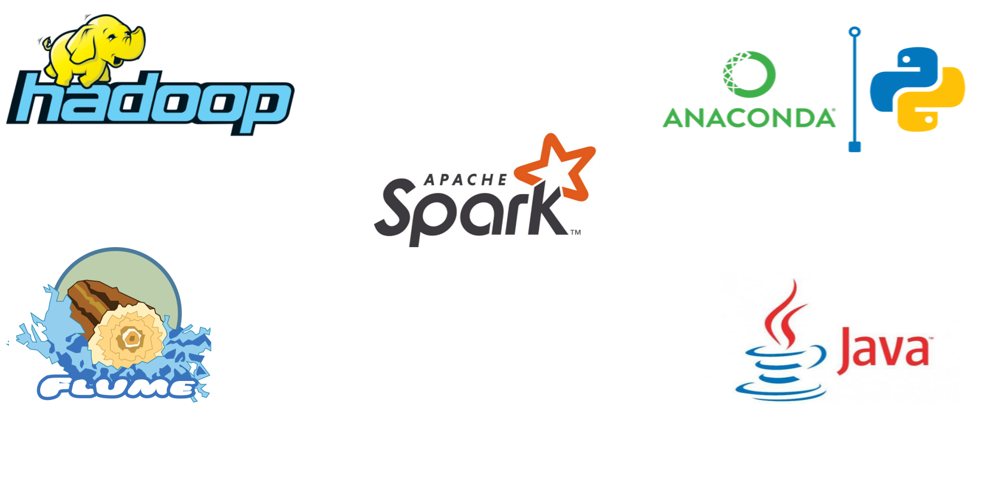
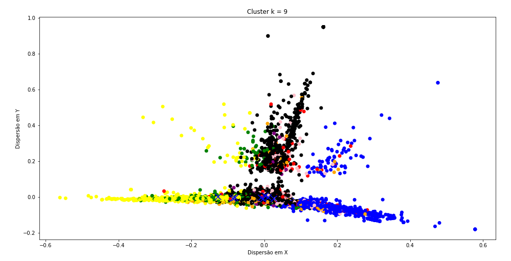
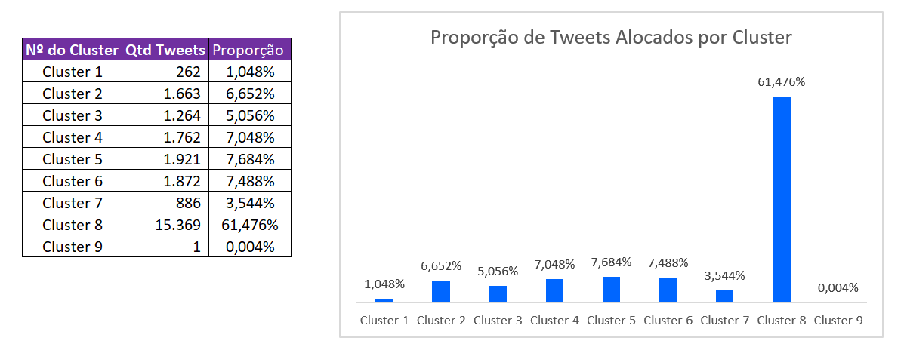
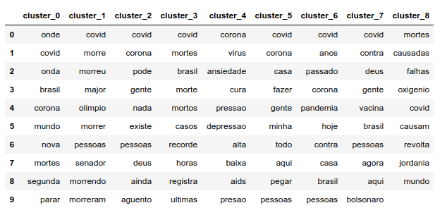

Agenda:
- Contexto
- Arquitetura do Projeto
- Coleta de Dados
- Análise Descritiva
- Método de Clusterização
- Resultados Obtidos
Contexto:
- Por que Covid ?
- Por que Twitter ?
- Desafios
Arquitetura do Projeto

Método de Clusterização:
Dispersão por Cluster

Proporção de Tweets por Cluster

Resultados Obtidos:
Palavras mais Frequentes por Cluster
